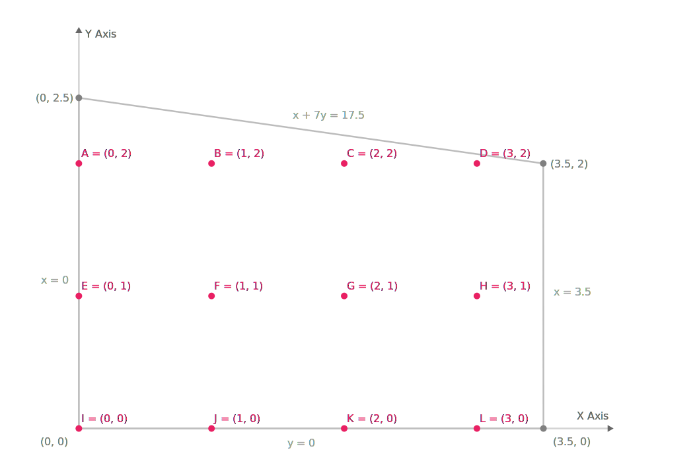

PyORlib


Documentation: https://dapensoft.github.io/pyorlib
Source Code: https://github.com/dapensoft/pyorlib
PyORlib is a powerful Python library for operations research and optimization. It provides a set of abstractions to easily define, solve, and interact with mathematical models in a standardized manner across different optimization packages. With PyORlib, you can easily implement mathematical models using a user-friendly interface, while seamlessly identifying the ideal solver or optimization package, such as CPLEX, Gurobi, OR-Tools, or PuLP, that perfectly aligns with your specific requirements.
Key Features¶
PyORlib offers a powerful yet easy-to-use set of tools for mathematical modeling and optimization:
- Intuitive API ─ PyORlib provides a user-friendly API that allows you to define, solve, and interact with mathematical models in a standardized manner across different optimization packages.
- Seamless Solver Integration ─ Optimize models across different solvers, including custom ones, without modifying the model's definition. Tailor the behavior and capabilities of the solvers to perfectly align with your unique requirements.
- Simplified Mathematical Modeling ─ Define mathematical models effortlessly using PyORlib's comprehensive set of abstractions and classes. Focus on the problem at hand instead of getting lost in implementation details.
- Scalability and Maintainability ─ Keep your code organized, readable, and maintainable over time with the PyORlib's workflow. Structure your variables, parameters, constraints, and objective functions in a clean and extensible manner.
- No Overhead ─ PyORlib ensures full compatibility between models and different solvers by seamlessly translating models to each solver's native format, acting as a standardized communication interface.
- Data Validation ─ PyORlib offers comprehensive format and content validations to ensure the integrity of your model data. These validation features help identify errors early and maintain consistent, error-free model data for robust optimization.
- Comprehensive Documentation ─ PyORlib provides a comprehensive documentation suite that includes API references and usage examples, to effectively leverage all the features and capabilities of the library.
A Simple Example¶
Experience the power of PyORlib through a simple example that illustrates the core concepts and basic usage of the package by formulating and solving a mixed integer programming (MIP) problem from the OR-Tools documentation. This example will provide you with a clear and concise introduction to the package's functionalities and its application in real-world optimization challenges.
Problem Formulation¶
In this example, we will find the highest integer coordinates (x, y) on the Y-axis within a defined shape. Our objective is to maximize the value of an objective function while satisfying linear constraints, as shown below with a mathematical formulation:
Since the constraints are linear, we can classify this problem as a linear optimization problem in which the solutions are required to be integers. The feasible region and integer points for this problem are shown below:

Solution Using PyORlib¶
In order to model and solve this problem, we'll be using the PyORlib package. In this example, we'll utilize the OR-Tools optimization package, which is one of the built-in integrations provided by PyORlib. However, you can also choose to use other integration options described in the Optional Dependencies section, or even implement your own custom integration. Before proceeding, make sure you have installed the OR-Tools integration. Once that is done, let's get started:
As we can see from the previous example, PyORlib follows a simple and user-friendly workflow for defining, solving, and interacting with mathematical models. Let's review the key steps:
-
Import necessary modules: We first imported the required modules from PyORlib, including the
Modelclass,ORToolsEngineclass, and necessary enums (ValueTypeandOptimizationType). -
Create a new model: Then we created a new
Modelobject and specified that we want to use the OR-Tools engine for solving the optimization problem. - Define the variables: We added 2 integer variables, x and y, to represent the coordinates on the Y-axis within the defined shape.
- Define the constraints: We added linear constraints to the model to restrict the feasible region of the optimization problem and ensure the coordinates (x, y) satisfy specific conditions.
-
Define the objective function: We set the objective of the model using the
set_objectivemethod to maximize the objective function x + 10 * y. - Solve the model: We invoked the solve method on the model to find the optimal values for variables (x, y) that satisfy the constraints and maximize the objective function.
- Display the solution: Finally, we called the print_solution method to showcase the optimal values of variables (x, y) and the corresponding value of the objective function.
Having gained a clear understanding of the workflow showcased in the Simple Example, you are now well-equipped to explore more intricate optimization scenarios and fully harness the capabilities of PyORlib in your own projects.
Next steps...
Feel free to experiment and build upon this example to explore the full potential of PyORlib in your projects. With PyORlib, you can define and implement complex mathematical models and algorithms, test multiple optimization packages to identify the ideal one that perfectly aligns with your unique requirements, define and organize the vital components of your optimization model, and much more!
A Practical Example¶
To demonstrate PyORlib in a realistic scenario, we will implement a transportation problem from the GAMS Tutorial by Richard E. Rosenthal, which provides a comprehensive case study for testing PyORlib's optimization capabilities and features.
Problem Formulation¶
The transportation problem we will address is a classic instance of linear programming's transportation problem, which has historically served as a testing ground for the development of optimization technology. This transportation problem involves determining the optimal flow of a product from multiple sources (plants) to destinations (markets) to minimize costs while satisfying demands.
Before diving into the implementation, let's take a moment to familiarize ourselves with the key components of the model. This brief exploration will provide a better understanding of how these components work together.
-
Indices:
\(i=\) plants; \(\quad j=\) markets.
-
Parameters (Given Data):
\(a_{i}=\) supply of commodity of plant \(i\) (in cases).
\(b_{j}=\) demand for commodity at market \(j\) (cases).
\(c_{ij}=\) cost per unit shipment between plan \(i\) and market \(j\) ($/case).
-
Decision Variables:
\(x_{ij}=\) amount of commodity to ship from plant \(i\) to market \(j\) (cases).
-
Constraints:
Observe supply limit at plant \(i\): \(\sum_{j=1}^{m} x_{ij} \leq a_{i} \quad \forall_{i}\)
Satisfy demand at market \(j\): \(\sum_{i=1}^{n} x_{ij} \geq b_{j} \quad \forall_{j}\)
The GAMS tutorial describes a scenario with two canning plants and three markets. It provides sample supply, demand and cost data. We will use this same data to define our model.
| New York | Chicago | Topeka | Supply | |
|---|---|---|---|---|
| Seattle | 2.5 | 1.7 | 1.8 | 350 |
| San Diego | 2.5 | 1.8 | 1.4 | 600 |
| Demand | 325 | 300 | 275 | |

|
||||
To model and solve the problem in Python, we will use PyORlib and its CPLEX integration. However, it’s important to note that you can choose any of the supported optimization engine integrations described in the Optional Dependencies or even use your own custom implementations.
Solution Using PyORlib¶
Before proceeding, ensure that PyORlib is installed, along with its integration for the CPLEX engine. Once everything is set up, let's build our transportation model:
Runtime Flexibility & Customization
As previously mentioned, we have the ability to solve this model using multiple optimization engines without making any changes to the underlying definition. For instance, we can employ various optimization engines, such as:
Gurobi Engine:from pyorlib.engines.gurobi import GurobiEngine model = Model( engine=GurobiEngine(), name="A Transportation Model", )
OR-Tools Engine:from pyorlib.engines.ortools import ORToolsEngine model = Model( engine=ORToolsEngine(), name="A Transportation Model", )
PuLP Engine:
As we can see from this practical example, PyORlib enables us to easily build a transportation model, define its necessary components, optimize the model, and obtain the optimal solution. The simple yet powerful syntax of PyORlib allows us to focus on the problem at hand without getting lost in implementation details.
Organized & Readable Workflow¶
PyORlib goes beyond the optimization process and offers a powerful modeling workflow that emphasizes code organization, readability, and maintainability over time. This workflow is built upon a set of abstractions and classes from the structures module, that allows you to centralize and standardize the definition of your model's components, such as dimensions, parameters, decision variables, and constant properties.
One significant advantage of PyORlib's workflow is the ability to easily rename and modify components throughout your codebase. Instead of manually searching and replacing strings, you can make changes in one place, ensuring consistency and reducing errors.
By leveraging PyORlib's structured approach, you can improve the maintainability and scalability of your models. The clean and organized codebase makes for easy navigation, understanding, and modification, making it easier to collaborate with other team members and adapt your models to changing requirements.
Ensuring Model Integrity¶
In addition to PyORlib's workflow capabilities, this package provides a set of abstractions designed to apply validations and ensure the integrity of your model data. These validation features play a crucial role in identifying errors early on and maintaining consistent, error-free model data, resulting in more robust optimization.
- Defining Validation Rules ─
PyORlib utilizes Python
descriptorsanddataclassesto define validation rules for model schemas. Attributes likeDimensionFieldandParameterFieldallow specifying requirements like minimum/maximum values. - Putting it into Practice ─
To apply validations, instantiate the
ExampleSchemaclass with the model data. If initialization succeeds without errors, the data passed all validations and can be used safely for optimization. However, if the data is invalid, an error will be raised immediately upon initialization, before the invalid data can be optimized.
By validating data upon instantiation, any issues are caught immediately before the model is optimized. This helps maintain data integrity and prevents errors downstream in the optimization process.
Runtime Flexibility & Customization¶
At its core, PyORlib provides a modular optimization design that allows you to seamlessly switch between different built-in or custom optimization engine implementations on the fly. Whether you opt for official optimization package integrations or decide to create your own custom ones, PyORlib allows you to tailor the behavior and capabilities of the optimization engine to perfectly align with your unique requirements.
By leveraging the principles of dependency inversion and open-closed design, PyORlib decouples the model's optimization from the underlying implementation, allowing you to optimize models across different optimization engines, including custom ones, without modifying the model definition or employing complex logic.
Seeing it in Action¶
To showcase the flexibility of PyORlib, let's revisit the Simple Example we discussed earlier and use it as our foundation. After copying the example, we will make some modifications to decouple the dependency from a specific optimization engine to its interface, and encapsulate the model definition and resolution within a function to ensure reusability across different optimization engines, as shown below:
As we can see from the example, by just depending on the engine interface instead of a concrete implementation and applying dependency injection, we were able to solve the same MIP problem from the Simple Example across multiple optimization engines, including custom ones, without modifying the underlying model definition and optimization.
Built-in & Custom Integrations¶
Out of the box, PyORlib provides integrations for popular solvers like CPLEX, Gurobi, OR-Tools and PuLP, leveraging their proven algorithms to optimize models reliably. These integrations give you access to top-tier solvers without additional work. However, the options are not limited only to built-in integrations.
PyORlib also supports custom engine implementations through its extensible and flexible architecture.
You can create your own optimization engines by subclassing the base Engine class and implementing the
necessary methods, whether using third-party or custom algorithms.
Continuous Evolution¶
PyORlib continuously adapts to support developers across various technological and programming domains. Its primary goal is to remain a useful tool for learning about operations research, mathematical model optimization, and testing different optimization packages with ease.
While future development may introduce some changes to enhance and expand certain current functionalities, the highest priority remains providing a simple yet powerful platform for students, researchers, and practitioners to explore optimization concepts, test algorithms, and further their own knowledge. Large-scale changes that could introduce significant complexity are less likely in order to maintain accessibility as the core focus.
Driving Innovation Through Collaboration
PyORlib is an open source project that welcomes community involvement. If you wish to contribute additional optimization suites, improvements, or bug fixes, please check the Contributing section for guidelines on collaborating.
Get Started Today!¶
Are you ready to dive into the operation research and optimization modeling world with PyORlib? Follow these steps to integrate PyORlib into your project and start leveraging its powerful modeling tools. Click the button below to navigate to the PyORlib Getting Started page and explore detailed instructions, examples, and more:
License¶
PyORlib is distributed as open source software and is released under the MIT License.
You can view the full text of the license in the LICENSE
file located in the PyORlib repository.